MJ Admin: Full access including user management and system settings.
1.2 Dashboard
Upon logging in, you will be directed to the Dashboard. This serves as the central hub for the compliance portal.
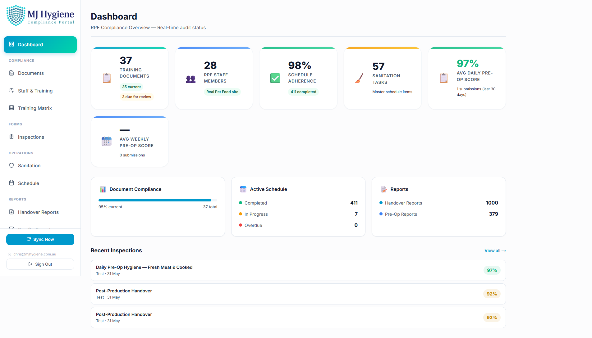
Stats Cards: View high-level metrics such as total staff, document count, and training compliance percentage.
Sync Button: Manually trigger a synchronization with the master Airtable database to ensure you are viewing the latest data.
2. Training & Documents
2.1 Documents Page
The Documents page provides a searchable master list of all RPF procedures, policies, and manuals.
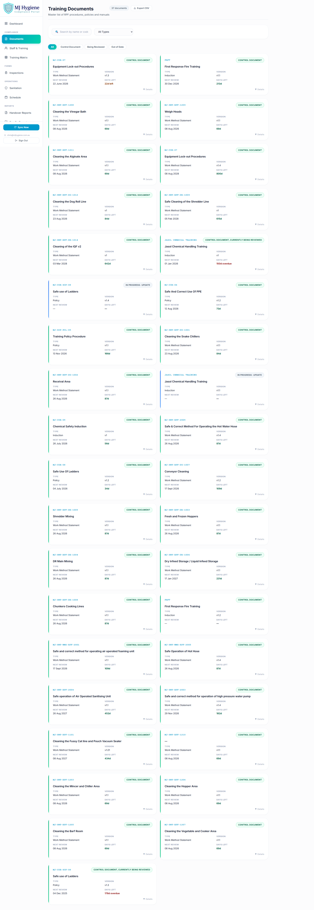
Features:
Search: Quickly find documents by name or Document Code (e.g., "MJ-SWP-RPF").
Filters: Filter by Status (Control Document, Being Reviewed, Out of Date) or by Document Type.
Card View: Documents are displayed as cards showing their version, next review date, and days left until review.
View Details: Click on a document card to expand it and view associated areas, re-training frequency, and download the actual document file.
2.2 Staff & Training
This page lists all RPF team members and their individual training compliance records.
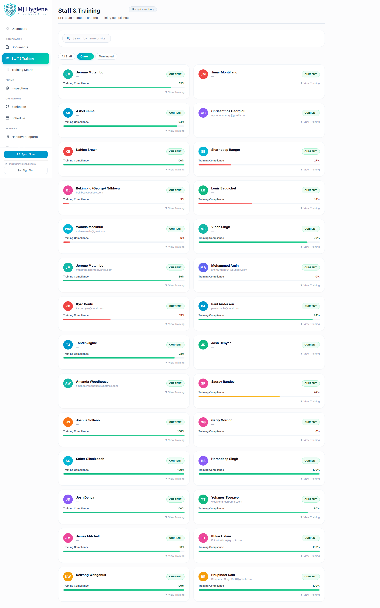
Features:
Search & Filter: Find staff by name, or filter by their current employment status (Current/Terminated).
Staff Cards: Displays the staff member's name, site, and overall training compliance percentage.
Training Records: Click a staff card to view a list of all procedures they have been trained on.
Training Status Badges
Training statuses are visually colour-coded:
Current - Training is up to date.
Refresh Due - Training expires soon (within 30 days).
Requires Training - Staff member has not completed this training.
Out of Date - Training has expired.
No Record - No training record exists.
2.3 Training Matrix
The Training Matrix provides a bird's-eye view of your entire workforce's compliance against all required procedures.
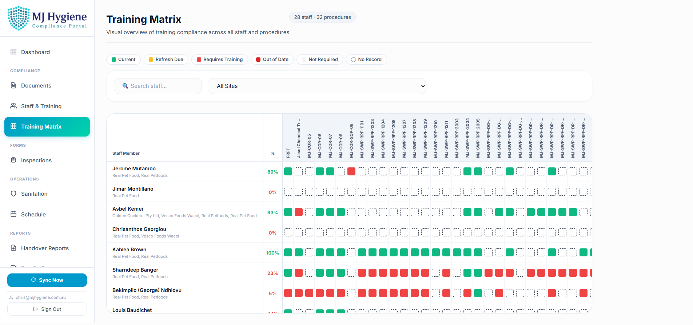
How to use the matrix:
The grid shows Staff Members on the left (rows) and Procedures (WMS) across the top (columns).
Each cell is colour-coded based on the staff member's status for that specific procedure (Green = Current, Red = Out of Date, Grey = No Record).
Hover over any cell to see a tooltip with exact details (dates, status).
The top row shows the overall compliance percentage for each procedure.
2.4 WMS Training Lookup (Admin / Supervisor)
This specialised tool allows Supervisors and Admins to quickly check which staff members are qualified for a specific procedure.
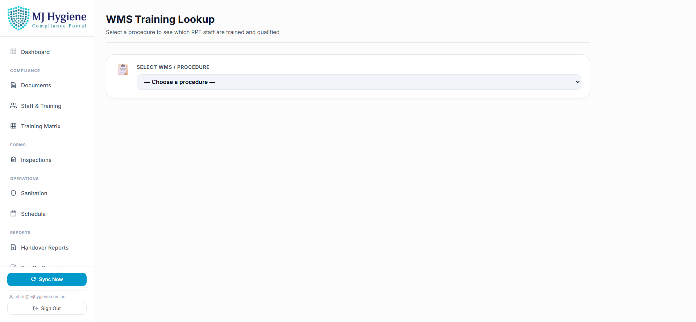
Instructions:
Select a WMS Procedure from the dropdown menu (e.g., "Cleaning the Fussy Cat line").
The system will display a list of all Current RPF Staff.
Staff who are currently trained will show a Current badge and a 📄 Cert link if a certificate is available to download.
You can filter the list to only show staff who are "Current" or those who "Require Training".
Protected Records
Training records dated prior to May 2026 are protected as historical data and will not be overwritten by system syncs.
3. Operations & Compliance
3.1 Sanitation Schedule
Track all routine cleaning tasks and master sanitation schedules.
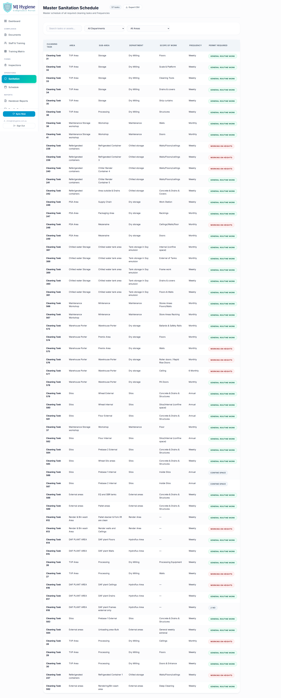
View tasks grouped by Area and Department.
See cleaning frequencies (e.g., Daily, Weekly, Monthly) and specific asset requirements.
Access linked procedure documents directly from the schedule.
3.2 Inspections / Forms
Complete and manage digital inspection forms natively within the portal.
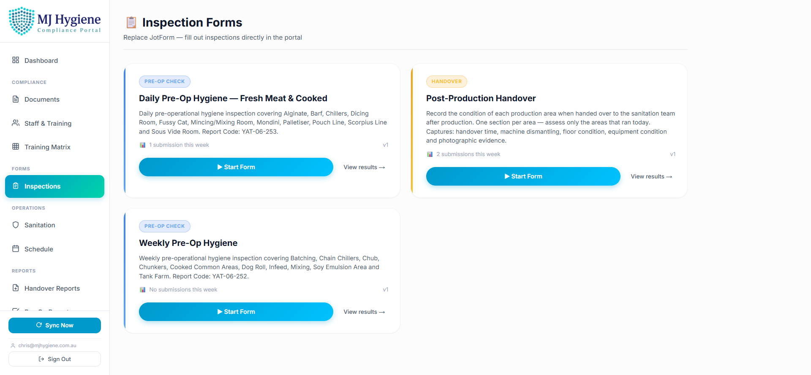
Form List: View available inspection templates.
Completing Forms: Fill out mobile-friendly, multi-step forms directly in your browser. No external apps required.
Submissions: View past form submissions, including scores, dates, and the inspector's name.
3.3 Handover Reports
Review shift handover communications.
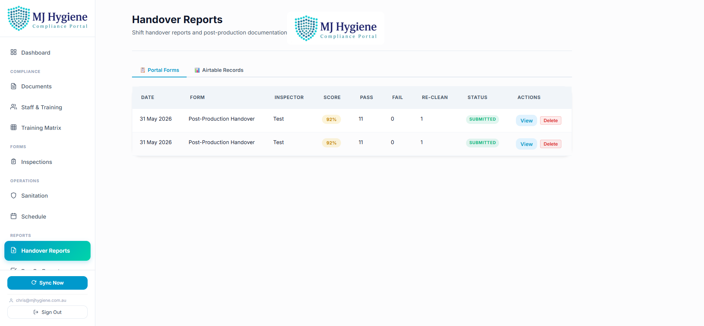
Filter reports by date range or site.
View issues, outstanding tasks, and shift notes to ensure smooth operational transitions.
3.4 Pre-Op Reports
Access Pre-Operational hygiene inspection records.
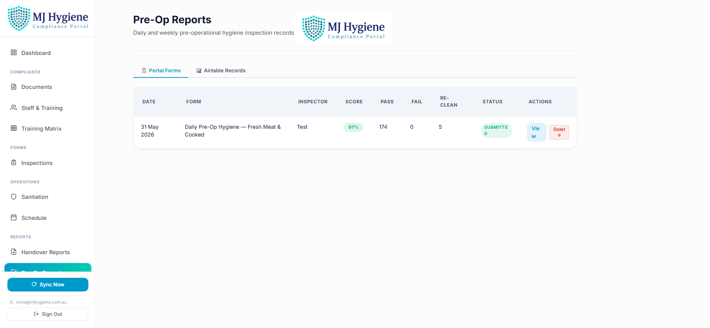
Review pass/fail metrics for specific production areas before operations commence.
Track corrective actions for failed pre-op inspections.
4. Administration
4.1 User Management
Available to MJ Admin users only. Manage who has access to the portal.
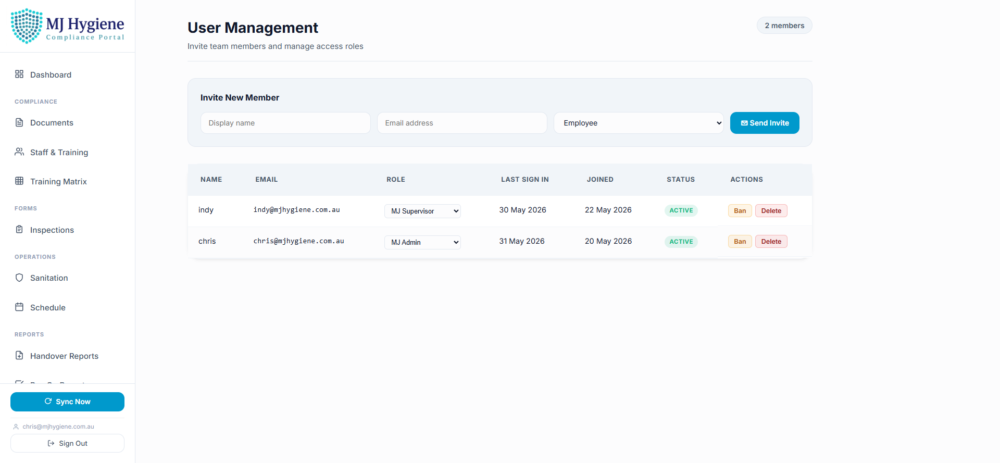
Actions available:
Invite User: Send an email invitation to a new staff member. Assign them a specific role (Inspector, Supervisor, Admin).
Edit Roles: Change a user's permission level.
Deactivate: Revoke a user's access to the portal.
4.2 Email Settings
Available to MJ Admin users only. Configure how the portal sends outbound emails (e.g., invitations, alerts).
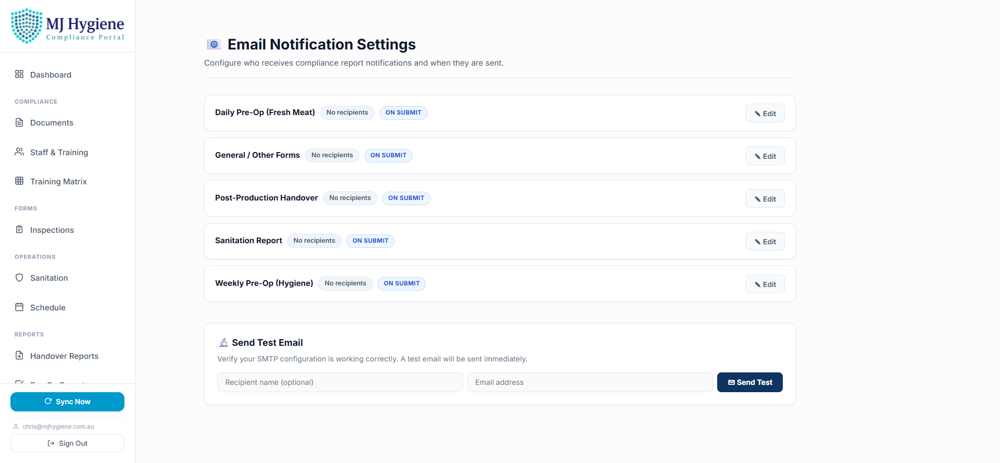
Configure SMTP server details (Host, Port, Username, Password).
Send a test email to verify the configuration is working correctly.
4.3 Data Sync
The RPF Compliance Portal is backed by a robust synchronization engine that pulls data from legacy systems (Airtable) into a fast, reliable Supabase database.
Automated Background Sync
The system automatically syncs data in the background every 30 minutes. You rarely need to trigger this manually.
When to use Manual Sync:
If a record was just updated in the legacy system and you need to see it in the portal immediately, click the Sync button on the Dashboard. This forces an instant refresh of Staff, Documents, Training, and Schedule data.